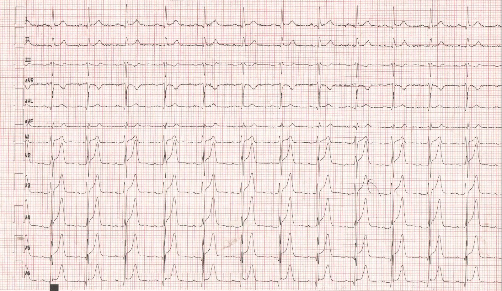
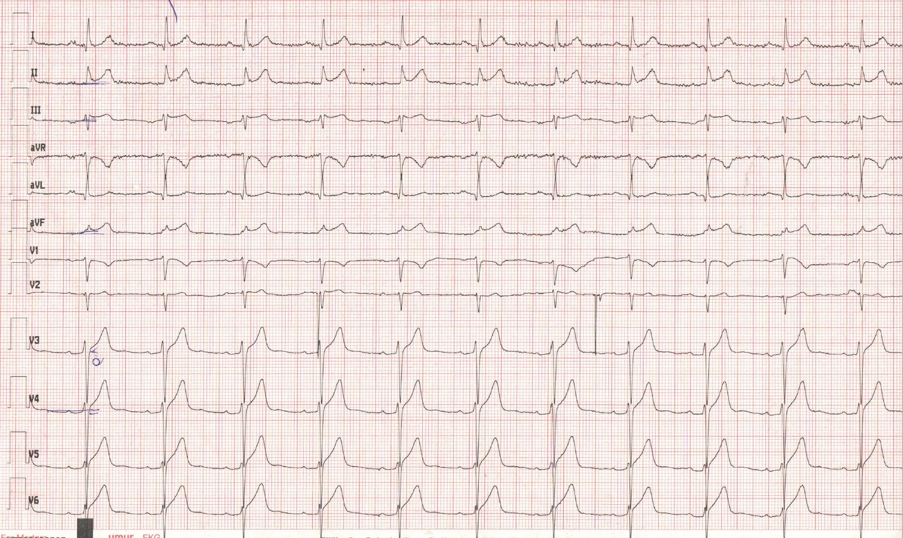
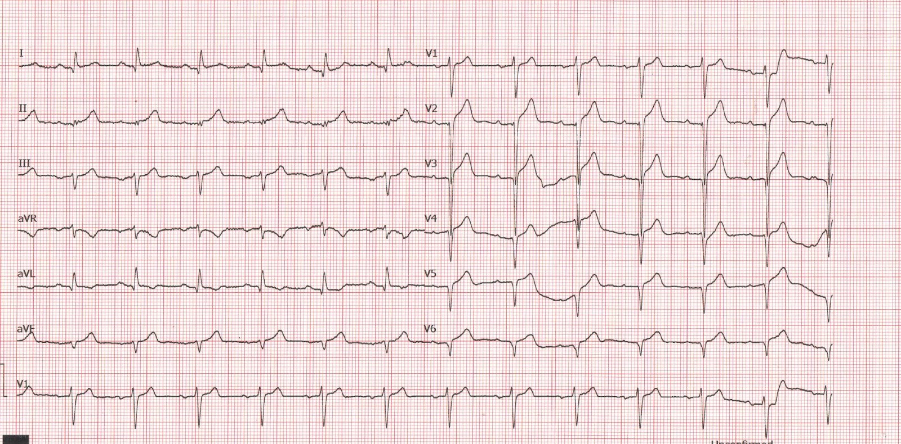

13/11/2022 — Đôi khi ngay cả việc đạt tiêu chuẩn ST chênh lên cũng chưa đủ sức thuyết phục
Bản dịch tiếng Việt của bài "Sometimes even ST Elevation meeting criteria is not enough to be convincing" – Dr. Smith’s ECG Blog. Giữ nguyên toàn bộ 4 hình ảnh của bản gốc.
Bài viết của Emre Aslanger. Emre là một Biên tập viên mới của Blog. Anh là bác sĩ can thiệp tại Thổ Nhĩ Kỳ.
Một người đàn ông ngoài 50 tuổi, có tiền sử tăng huyết áp và đái tháo đường mới được chẩn đoán nhưng không dùng thuốc gì, đến một trung tâm không có khả năng làm PCI vì đau ngực vùng giữa ngực, tính chất mơ hồ. Dấu hiệu sinh tồn bình thường và điện tâm đồ đầu tiên như dưới đây:


Có ST chênh lên (STE) rõ ràng ở các chuyển đạo trước. STE ở chuyển đạo I và II tinh tế hơn. Sự hiện diện của khía J (J notch) ở V6 có thể đã đánh lừa bác sĩ, khiến nghĩ tới tái cực sớm, nhưng dấu hiệu này cũng có thể gặp trong OMI thành trước. Lưu ý biên độ QRS hơi thấp hơn mong đợi và có tăng tiến sóng R kém (poor R wave progression). Thêm vào đó là ST chênh xuống soi gương (reciprocal) nhẹ ở chuyển đạo III và aVF.
Có sóng T cao và nhọn ở các chuyển đạo trước. Nhiều sách giáo khoa thường mô tả sóng T tối cấp (hyperacute T waves) như vậy, nhưng thực ra phần lớn sóng T tối cấp là “đầy đặn” (bulky) chứ không phải “nhọn”; đây là một ví dụ tình cờ có cả hai đặc điểm. Ngoài ra, không chỉ độ đầy đặn của sóng T là quan trọng, mà tỷ lệ của nó so với phức bộ QRS tương ứng cũng quan trọng. Bạn có thể tìm thấy nhiều ví dụ trên blog này chứng minh điều đó. Chẳng hạn ở đây, nếu xét riêng, sóng T ở chuyển đạo II và aVF trông không tương xứng với phức bộ QRS tương ứng của chúng.
Đây có phải là một điện tâm đồ tinh tế không? Tôi chắc chắn là không, đối với độc giả của blog này. Nhưng tôi thường xuyên chứng kiến rằng chẩn đoán OMI, đặc biệt là OMI thành trước, trở nên khó hơn nhiều khi không có thay đổi soi gương rõ ràng (dù ở đây chúng ta có những thay đổi tinh tế). Đây là một điện tâm đồ có giá trị chẩn đoán rõ ràng, khiến tôi nghĩ tới tắc đoạn gần động mạch liên thất trước (LAD).
__________________
Smith bình luận:
–Chuyển đạo III là một dấu hiệu tố cáo khác. Bạn sẽ không thấy ST chênh xuống kèm sóng T dạng xuống-lên (down-up) như thế này trong ST chênh lên biến thể bình thường.
—Còn Công thức phân biệt STE bình thường với OMI thành trước thì sao?
Chúng ta không thấy QTcB do máy tính đo, nhưng tôi đo được 426 ms
Biên độ R ở V4 (RAV4) = 5.5 mm, QRS ở V2 (QRSV2) = 12.5; ST chênh lên tại 60 ms sau điểm J ở V3 (STE60V3) = 3.5 mm
Công thức = 22.51, gần như chẩn đoán xác định tắc LAD
BS. Aslanger đã thực hiện thẩm định ngoài (external validation) cho công thức này. Toàn văn tại đây:
A tale of two formulas: Differentiation of subtle anterior MI
from benign ST segment elevation (Chuyện hai công thức: phân biệt nhồi máu cơ tim thành trước tinh tế với ST chênh lên lành tính)
_________________
Điện tâm đồ này được ghi lúc 14:52.
Có thể hiểu rằng bác sĩ điều trị chính đã nghĩ điện tâm đồ này nhiều khả năng phù hợp với ‘tái cực sớm’ hơn, trong bối cảnh đau ngực không điển hình, và ông đã chỉ định xét nghiệm hsTnT, kết quả âm tính (11 ng/L, bình thường <14 ng/L). Điện tâm đồ thứ hai được ghi lúc 15:16.


Nếu điện tâm đồ đầu tiên chưa có giá trị chẩn đoán, thì sự thay đổi giữa hai điện tâm đồ này lẽ ra phải có. Đây cũng là một điện tâm đồ rõ ràng đối với độc giả của blog này, nhưng có thể khó với người không quen nhìn các điện tâm đồ không theo lối mòn. Giờ đây có STE ở các chuyển đạo dưới (Điều đáng tiếc về các chuyển đạo này là cách gọi tên quy ước gán cho chúng nhãn “dưới”, một cách gọi gây hiểu lầm hết mức xét về mặt điện sinh lý. Xem tài liệu tham khảo). STE ở các chuyển đạo dưới là dấu hiệu thường gặp trong tắc đoạn xa LAD (không nhất thiết là ở LAD “vòng qua mỏm” (wraparound), vốn dĩ ít nhiều đã là một đặc điểm của nhiều LAD mà bạn sẽ thấy nếu tìm), bởi vì vectơ ST hướng về mỏm không bị các phân đoạn trước vùng đáy chiếm ưu thế hơn kéo lên trên. Đây là một hướng vectơ ST bất lợi, vì nó gây ra STE lan tỏa, và một trong những sai lầm quan trọng nhất cần tránh ở đây là nghĩ tới chẩn đoán viêm màng ngoài tim.
Hãy nhìn STE ở chuyển đạo II, aVF. Chúng không tương xứng với phức bộ QRS tương ứng đến mức tự thân chúng đã có giá trị chẩn đoán. STE không tương xứng như vậy hầu như không bao giờ gặp trong viêm màng ngoài tim. Cũng lưu ý tăng tiến sóng R kém ở các chuyển đạo trước, đây cũng không phải là đặc điểm của viêm màng ngoài tim. Tôi thậm chí còn chưa nhắc tới thay đổi động (dynamic) giữa hai điện tâm đồ. Cũng lưu ý cách các sóng T tối cấp của hình ảnh tắc đoạn gần đã chuyển thành hình ảnh mỏm-bên. Loạt điện tâm đồ này cho thấy nhiều ví dụ khác nhau của các dấu hiệu mang cùng một tên gọi.
Nhưng tại sao hình ảnh OMI LAD đoạn gần lại chuyển thành hình ảnh OMI LAD đoạn xa ở đây? Hãy chờ kết quả chụp mạch vành.
Với sự trấn an sai lầm từ troponin âm tính, những thay đổi gây bối rối trên điện tâm đồ và đau ngực không điển hình, điện tâm đồ thứ ba được ghi muộn hơn nhiều (tương tự điện tâm đồ thứ tư ghi tại cơ sở của chúng tôi, xem bên dưới), lúc 17:40. Tôi không biết lý do vì sao lại mất nhiều thời gian như vậy, nhưng đến lúc đó troponin lần hai đã dương tính và bệnh nhân được chuyển tới bệnh viện chúng tôi để “PCI cấp cứu”.
Bệnh nhân đến bệnh viện chúng tôi một giờ sau đó. Điện tâm đồ tại khoa cấp cứu như dưới đây:


Điện tâm đồ vẫn có giá trị chẩn đoán, nhưng ở đây chúng ta đang chứng kiến diễn tiến tự nhiên của nhồi máu cơ tim. Tôi khó mà hiểu được chuỗi sự kiện đã dẫn tới sự chậm trễ không thể chấp nhận được này và khiến bệnh nhân mất thành trước.
Đây là hình chụp mạch vành:
Có một tổn thương có huyết khối ở lỗ xuất phát (ostial) LAD, bên cạnh tổn thương xơ vữa lan tỏa, may mắn là đã tự tái tưới máu. Bạn có thể thấy một hình khuyết thuốc ở LAD đoạn xa, nhiều khả năng do thuyên tắc từ tổn thương đoạn gần. Cũng lưu ý rằng LAD không vòng qua mỏm nhiều để cấp máu cho thành dưới. Tổn thương đã được đặt stent thành công, nhưng đáng tiếc là việc này được thực hiện sau khi đã mất một lượng cơ tim đáng kể.
May mắn là troponin đỉnh chỉ 1090 ng/L và ngày hôm sau EF là 45-50%, kèm giảm động vùng mỏm và giữa thành trước. Bệnh nhân (và cả chúng tôi, những người chăm sóc anh ấy) thực sự may mắn khi thoát được với tổn thương hạn chế như vậy.
Thông điệp cần nhớ:
- Bất kỳ trường hợp tắc mạch vành nào cũng có thể biểu hiện bằng triệu chứng mơ hồ, nhưng khi điện tâm đồ đã rõ ràng thì không nên có bất kỳ nghi ngờ nào. Điện tâm đồ hầu như không bao giờ nói dối! Nhiều khi tin vào điện tâm đồ thận trọng hơn là tin vào bệnh sử của bệnh nhân.
- Troponin không bao giờ có thể bù đắp cho kỹ năng đọc điện tâm đồ hạn chế, hay hoàn toàn thiếu kỹ năng đó, của bạn.
- OMI thành trước có thể, và thường xuyên, biểu hiện mà không có thay đổi soi gương.
- Không nên mặc định rằng các chuyển đạo có STE là những chuyển đạo nằm ngay trên các phân đoạn đang bị nhồi máu. Tất cả là do hướng của vectơ ST. Vì vậy, hình ảnh tắc trên điện tâm đồ có thể thay đổi trong diễn tiến của OMI.
- Mặc dù các dấu hiệu trên điện tâm đồ kéo dài, đôi khi tổn thương có thể ít hơn dự kiến, nhờ các chu kỳ mở-đóng tự phát, tiền thích nghi thiếu máu cục bộ (ischemic preconditioning) và sự hiện diện của tuần hoàn bàng hệ.
Tài liệu tham khảo
- Aslanger EK. Considerations on the naming of myocardial infarctions. J Electrocardiol. 2022 tháng Ba–tháng Tư;71:44-46. doi: 10.1016/j.jelectrocard.2022.01.006. Xuất bản điện tử ngày 31 tháng Một năm 2022. PMID: 35124348.
- Bozbeyoğlu E, Yıldırımtürk Ö, Aslanger E, Şimşek B, Karabay CY, Özveren O, Değertekin MM. Is the inferior ST-segment elevation in anterior myocardial infarction reliable in prediction of wrap-around left anterior descending artery occlusion? Anatol J Cardiol. 2019 tháng Tư;21(5):253-258. doi: 10.14744/AnatolJCardiol.2019.09465. PMID: 31062754; PMCID: PMC6528511.
- Aslanger EK, Meyers HP, Smith SW. Recognizing electrocardiographically subtle occlusion myocardial infarction and differentiating it from mimics: Ten steps to or away from cath lab. Turk Kardiyol Dern Ars. 2021 tháng Chín;49(6):488-500. doi: 10.5543/tkda.2021.21026. PMID: 34523597.

===================================
BÌNH LUẬN CỦA TÔI, bởi KEN GRAUER, MD (13/11/2022):
===================================
Một ca rất thú vị của Emre Aslanger. Trong số những điểm quan trọng mà phần bàn luận của BS. Aslanger nêu ra có các điểm sau:
- Mặc dù bệnh sử là đau ngực kiểu “mơ hồ” và troponin ban đầu âm tính — nhồi máu diện rộng vẫn đã xảy ra.
- OMI thành trước không phải lúc nào cũng kèm thay đổi soi gương ở các chuyển đạo dưới (Nhiều ca trên Blog của Dr. Smith cho thấy cùng hiện tượng này).
- ST chênh lên ở cả các chuyển đạo trước lẫn các chuyển đạo dưới không nhất thiết cho thấy tổn thương LAD “vòng qua mỏm” (wraparound) (tài liệu tham khảo của Bozbeyoğlu ghi nhận điều này được BS. Aslanger trích dẫn bên dưới — với BS. Aslanger là một trong các đồng tác giả).
- “Hình ảnh tắc” trên điện tâm đồ có thể thay đổi trong quá trình tiến triển (trong ca hôm nay — từ hình ảnh OMI LAD đoạn gần sang hình ảnh OMI LAD đoạn xa hơn, có lẽ do thuyên tắc từ một tổn thương đoạn gần).
- Tổn thương xơ vữa lan rộng (với bệnh nhiều nhánh mạch vành) — có thể tạo ra những thay đổi gây nhiễu trên điện tâm đồ.
- Các chu kỳ “mở-đóng” tự phát của động mạch “thủ phạm” cũng có thể tạo ra những thay đổi điện tâm đồ gây nhiễu tương tự — với một bức tranh không thể đoán trước về mức độ tổn thương cơ tim cuối cùng gây ra (Nhiều ca có cùng hiện tượng này trên Dr. Smith’s ECG Blog).
Tôi tập trung bình luận vào một khía cạnh bổ sung đã dẫn tới những thay đổi điện tâm đồ gây nhiễu trong ca hôm nay.
- Ban đầu tôi nghi ngờ đảo điện cực LA-LL ở 2 bản ghi đầu tiên của ca hôm nay. Từng bị “dính bẫy” bởi dạng đặt sai vị trí điện cực tinh tế này nhiều lần trước đây — tôi chú ý tới việc sóng P ở chuyển đạo I lớn hơn sóng P ở chuyển đạo II. Điều này hầu như không bao giờ gặp ở nhịp xoang, xét theo hướng của nút xoang (SA) so với nút AV trên mặt phẳng trán.
- Than ôi — tôi đã sai. Không có đảo điện cực trong ca hôm nay. Việc sóng P ở chuyển đạo I vẫn lớn hơn sóng P ở chuyển đạo II trên cả 3 bản ghi khẳng định rằng thay vì đảo điện cực — đây là nhịp nhĩ lạc chỗ!
Tôi xin bổ sung sự “dịch chuyển” trục mặt phẳng trán vào những thay đổi điện tâm đồ gây nhiễu thấy được qua 3 điện tâm đồ của ca hôm nay (tức là chuyển đạo aVF tiến triển từ một QRS nhỏ xíu nhưng đẳng điện ở điện tâm đồ #1 — sang QRS dương hoàn toàn ở điện tâm đồ #2 — rồi sang QRS âm là chủ yếu ở điện tâm đồ #3). Lời giải thích cho sự dịch chuyển trục này đưa chúng ta trở lại loạt dấu hiệu quan trọng mà BS. Aslanger đã nhấn mạnh:
- Thông tim cho thấy bệnh mạch vành lan tỏa (và điều này có thể tạo ra những dấu hiệu điện tâm đồ gây nhiễu).
- Ổ nhồi máu cuối cùng tiến triển rất rộng! (về cơ bản xóa sạch mọi lực dương ở các chuyển đạo ngực của bản ghi cuối cùng).
- “Hình ảnh tắc” trên điện tâm đồ đã thay đổi trong quá trình tiến triển của OMI (kéo theo dịch chuyển trục mặt phẳng trán và thay đổi hình dạng QRST rõ rệt qua 3 bản ghi).
T.B. (P.S.) — Đảo điện cực có xảy ra! Trước khi tôi “tiếp xúc cường độ cao” trên internet với các hình ảnh điện tâm đồ gây nhiễu khắp thế giới — tôi đã không nhận ra đảo điện cực phổ biến đến mức nào trong thực hành. Tôi ngờ rằng lý do là các bác sĩ lâm sàng không để tâm tìm kiếm chúng nhiều như vậy.
- Thường thì dễ nhận ra nguyên nhân đảo điện cực phổ biến nhất — đó là nhầm lẫn điện cực LA-RA. Nhưng các dạng khác (đặc biệt là đảo điện cực LA-RA [người dịch: nguyên văn như vậy, nhiều khả năng là lỗi đánh máy — có lẽ tác giả muốn nói đảo điện cực LA-LL]) — có thể tinh tế hơn nhiều, và dễ bị bỏ sót.
- Không có đảo điện cực trong ca hôm nay.
- Những ai quan tâm tới các ví dụ về Đảo điện cực (và CÁCH nhận ra khi nó xảy ra) — Xin xem Bình luận của tôi ở cuối trang trong bài đăng ngày 17 tháng Tám năm 2022 trên Dr. Smith’s ECG Blog. Tôi phân tích một ca đảo điện cực LA-RA — và dẫn link tới 11 ví dụ khác về đảo điện cực mà chúng tôi đã đăng trong những năm gần đây.